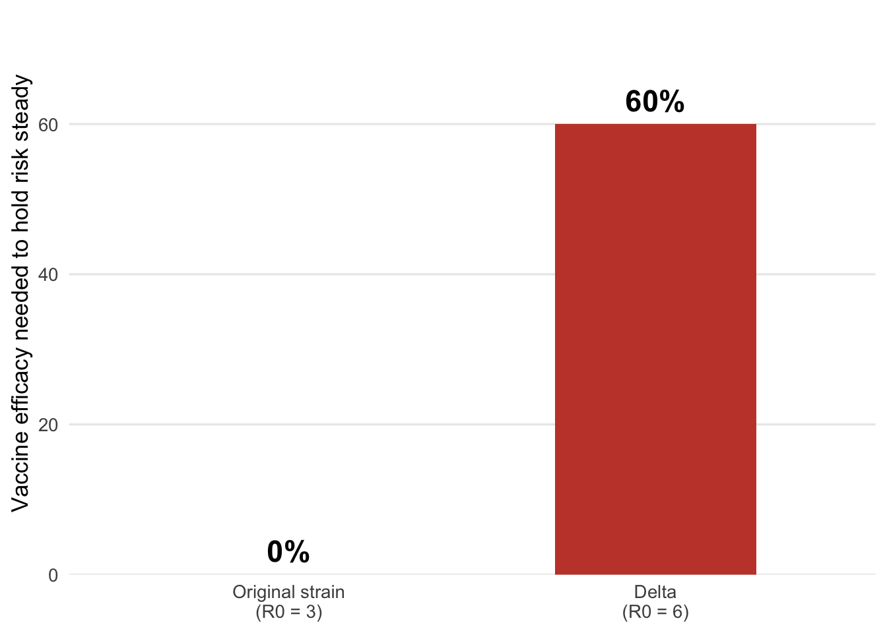

Problem description
For most of 2020 and 2021, getting into Australia meant two weeks in a hotel room. Then the vaccines arrived, and a reasonable question followed: if everyone flying in is vaccinated, why are we still doing this?
The answer turned out to depend on a variant that showed up at roughly the same time. Delta spread about twice as easily as the version of the virus the quarantine system had been built for, and the vaccines that worked well against the original strain were noticeably worse at stopping Delta from passing between people.
A team of researchers at the University of Melbourne and Monash built a simulation of a quarantine facility to work out how much that mattered. Their results answer two questions that are easy to confuse:
- Why wasn’t vaccination enough to relax quarantine?
- Does that mean vaccination made no difference at the border?
Analysis
Where the evidence comes from
The findings come from a 2022 study in Science Advances by researchers at the University of Melbourne and Monash University (Zachreson et al. 2022). They built a simulation of a quarantine facility holding 100 travellers, staffed by 20 workers, running the standard rules Australia used: a 14-day minimum stay, PCR tests on days 3 and 12, and isolation for anyone who tested positive. The simulation ran for the equivalent of a million days so that rare events, someone leaving quarantine while still infectious, happened often enough to count.
Two terms do most of the work in what follows. R0 is how many people one infected person passes the virus to, on average, in a population with no immunity. The original strain sat around 3; Delta was closer to 6. Vaccine efficacy against transmission is how much a vaccine cuts the chance of someone catching the virus and passing it on — not the same as protection against getting seriously ill, which stayed high throughout.
Question 1: why wasn’t vaccination enough?
The researchers set a benchmark: the level of risk the quarantine system carried before vaccines existed, back when the virus was less transmissible. Then they asked how good a vaccine would need to be to hold risk at that same level as the virus got more infectious.
As Figure 1 shows, under the original strain the system cleared that bar with no vaccination at all, that era was the benchmark. Under Delta, holding the same level of risk required a vaccine that cut transmission by more than 60%. Vaccines against Delta didn’t reliably reach that. The bar moved up and the vaccines moved down, at the same time.
So quarantine for vaccinated travellers under Delta had to look roughly like quarantine for unvaccinated travellers had looked before Delta. Vaccination wasn’t buying any relaxation.
Question 2: so did vaccination make no difference?
This is where the first answer gets misread. Table 1 sets four scenarios against the same pre-vaccine benchmark.
| Scenario | Risk of a case reaching the community |
|---|---|
| Before vaccines (original strain) | The benchmark |
| Vaccinated, Alpha variant | 3% of benchmark |
| Unvaccinated, Delta | 3x the benchmark |
| Vaccinated at 60%, Delta | Back to benchmark |
Two rows matter. An unvaccinated group under Delta carried three times the baseline risk, Delta alone made the border substantially more dangerous. And under the earlier Alpha variant, a 90% effective vaccine cut risk to 3% of baseline, which the researchers note would have let roughly 30 times more people fly in at the same level of risk.
That second number is the one that didn’t happen. The gain was real and it was large, and Delta took most of it back before it could be used. The paper puts it directly: had vaccines not arrived before Delta did, the quarantine system’s ability to prevent outbreaks would have deteriorated badly. Vaccination is what kept the system standing, not what let it relax.
Conclusion
Back to the two questions.
Why wasn’t vaccination enough to relax quarantine? Because Delta raised the bar at the same moment it lowered what vaccines could clear. Holding the border at its pre-vaccine level of risk needed a vaccine that cut transmission by more than 60%, and vaccines against Delta didn’t reliably manage that. Quarantine for vaccinated travellers had to stay roughly as strict as it had been for everyone.
Did that mean vaccination made no difference? No, and this is the part that gets lost. Under the variant circulating before Delta, vaccination cut border risk to 3% of the benchmark, enough to have let around thirty times more people fly in at the same level of risk. The researchers’ own conclusion is that without vaccines, the quarantine system’s ability to prevent outbreaks would have deteriorated badly once Delta arrived (Zachreson et al. 2022).
So the honest answer to “why are we still doing this?” isn’t that the vaccines failed. It’s that they were holding the line rather than winning ground. The two weeks in a hotel room stayed because the virus had changed underneath a system that was, by then, only just keeping up.
One caveat worth carrying out of this. The study models transmission, not illness, it’s asking how likely the virus is to get out of quarantine and spread, not how sick it makes people. Vaccine protection against severe illness stayed high throughout, including against Delta. A vaccine can be worse at stopping spread and still be the reason someone doesn’t end up in hospital.
References
Zachreson, Cameron, Freya M. Shearer, David J. Price, Michael J. Lydeamore, Jodie McVernon, James M. McCaw, and Nicholas Geard. 2022. “COVID-19 in Low-Tolerance Border Quarantine Systems: Impact of the Delta Variant of SARS-CoV-2.” Science Advances 8 (14): eabm3624. https://doi.org/10.1126/sciadv.abm3624.